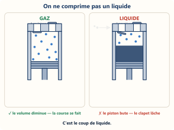
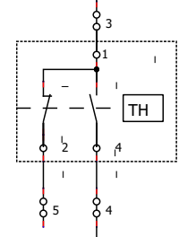
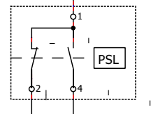
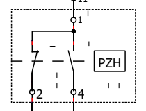
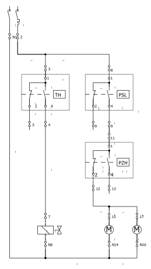

| NOM | TITRELe pump-down : pourquoi et comment | SEMAINE21/09/2026 | DURÉE · SAVOIRS1 h · S5.6 ; S6.2 ; S2.1 |
La machine tourne, puis elle s'arrête. Le gaz ne reste pas sur place : il part vers l'endroit le plus , l'évaporateur. Ce déplacement s'appelle la .
Au redémarrage, deux ennuis :

À toi : explique pourquoi on attend avant de redémarrer.
Le thermostat coupe directement le contacteur.
| CE QUI SE PASSE | CE QUI MANQUE |
|---|---|
| La pression descend trop | Personne ne coupe le compresseur |
| La pression monte trop | Personne ne coupe le compresseur |
| La machine s'arrête | Le gaz migre quand même |
| Le compresseur redémarre | Personne ne vérifie la pression |
À toi : pourquoi ne le garde-t-on pas ? Donne les deux ennuis de l'étape 1.
On ajoute un pressostat basse pression (BP) en série avec le thermostat. Il coupe le compresseur si la pression descend trop bas.



À toi : sur le symbole PSL, note les bornes du contact : borne et borne .
Le pump-down vide l'évaporateur de son gaz à chaque arrêt du groupe. C'est le montage que tu câbles cet après-midi.

| N° | CE QUI SE PASSE |
|---|---|
| 1 | La chambre a atteint sa température |
| 2 | Le thermostat ferme la vanne électromagnétique (VEM) |
| 3 | Le compresseur continue et vide l'évaporateur |
| 4 | La basse pression descend |
| 5 | Le pressostat BP arrête le compresseur |
| 6 | La température remonte dans la chambre |
| 7 | Le thermostat rouvre la VEM |
| 8 | L'évaporateur se remplit, la pression remonte |
| 9 | Le pressostat BP relance le compresseur |
À toi : sur le schéma, quelle borne alimente la VEM ? Borne .
Et : combien d'appareils le pressostat HP (PZH) protège-t-il ?
Le gaz vers l'évaporateur quand la machine s'arrête.
S'il redémarre trop vite, le compresseur risque un .
Le pump-down stocke le gaz côté pression pour éviter ce risque au redémarrage.
Les trois montages, du moins sûr au plus sûr :
| LE MONTAGE | CE QU'IL APPORTE EN PLUS |
|---|---|
| La commande directe | Rien : le thermostat coupe, et c'est tout |
| La sécurité minimum | |
| Le pump-down simple |
Pour cet après-midi : une question que je veux poser au professeur avant de câbler.